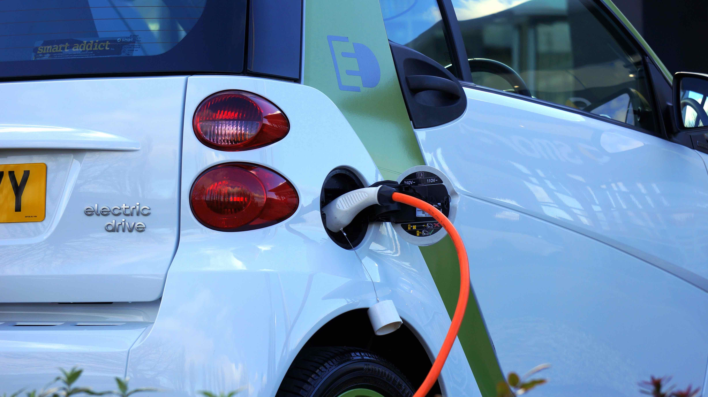
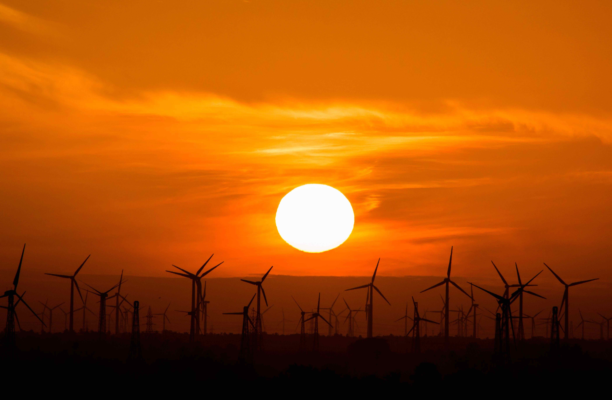

Pros And Cons Of Solar Power/Energy
Installing solar power system can significantly alter the world because the sun is a potent energy source. Solar energy has been assessed and shown to be expensive, but it still has many benefits for the environment. Here, we've included both the benefits and drawbacks of solar energy.
CONS
Weather-Dependent
For maximum efficiency, solar energy is primarily dependent on sunlight to generate electricity and heat. Solar energy is still generated during rainy and cloudy days, but the efficiency is very low. If you want your water heating solution to be effective at night, thermodynamic panels are an excellent option to consider.
Linked To Pollution
Although pollution from solar power systems is lower when compared to other energy sources, solar power is still associated with pollution. The installation and transportation of solar power systems have been linked to the release of greenhouse gases. While a solar photovoltaic system is being manufactured, you may come across some hazardous materials that are capable of wreaking havoc on your surroundings.
Solar Panel System Maintenance
The lifespan of solar panels depends on many factors, such as weather conditions and sun exposure. The lifespan of solar panels is usually expressed in years by manufacturers. The general rule is that they last around 20 years on average, but it could go much longer than that depending on the location of your project and its maintenance requirements. It’s important to choose a solar panel system with a good warranty period, but it can also be a good idea to look for quality brands that have a long warranty on their products.
Price
The purchase price of a solar power system is too high. Solar PV system payments include payments for inverters, wiring, solar panels, batteries, and installation. Still, solar technology is advancing day by day, and it's only a matter of time before it becomes very affordable for the middle class.
Uses Too Much Space
One disadvantage of using solar panels is that they take up a lot of space. The more power you want to produce, the more solar panels you'll need to absorb enough sunlight. Solar PV panels require adequate space, and some roofs are insufficient to accommodate the required number of solar panels. On second thought, you could put a few solar panels in your yard. These panels, however, must be directly connected to the sun. Meanwhile, if you don't have enough space to install the solar panels you want, you can install fewer solar panels to get enough power.

Different Applications
Solar energy is also used for a variety of purposes. For example, you can generate either heat or electricity. Furthermore, olar energy can be used to generate electricity in areas where there is no power grid, to power satellites in space, and to filter water. Another reason for the use of solar power is to connect materials used in the construction of houses.
Lower Maintenance Costs
Solar power systems don't require a lot of maintainance. The only thing you need to do is keep them tidy. This implies that you should clean your solar power system three to four times a year. To clean a solar power system, get in touch with a trusted cleaning business. For sold solar power systems, the majority of solar panel manufacturers provide warranties of up to 25 years. Aside from the solar panel, the inverter needs to be replaced after roughly ten years because it converts solar energy into electricity consistently. Finally, to make sure your solar power system operates at its peak, you can also replace the cables.
Technological innovations
Solar panel technology is constantly evolving in preparation for the future. New developments and advancements in nanotechnology and quantum physics can increase the effectiveness of solar panels and significantly increase the power generation of a solar energy system.
Renewable Energy Source
One of the primary benefits of using solar panels is that it is a renewable energy source. It is used in almost every country and can be found everywhere. The human race cannot exist without solar energy. We will continue to have solar energy as long as the sun shines. According to scientists, the sun will continue to orbit the Earth for at least 5 billion years.
Reduces electricity bills
You do not need to fund your electricity bills because your solar panels will meet some of your energy needs. The amount of money you will save on your electricity bills will be determined by the size of your solar power system and your electricity consumption. Furthermore, you will save money on electricity bills and be compensated for more than enough energy/power returned to the grid.
Source : Solar Power for Beginners